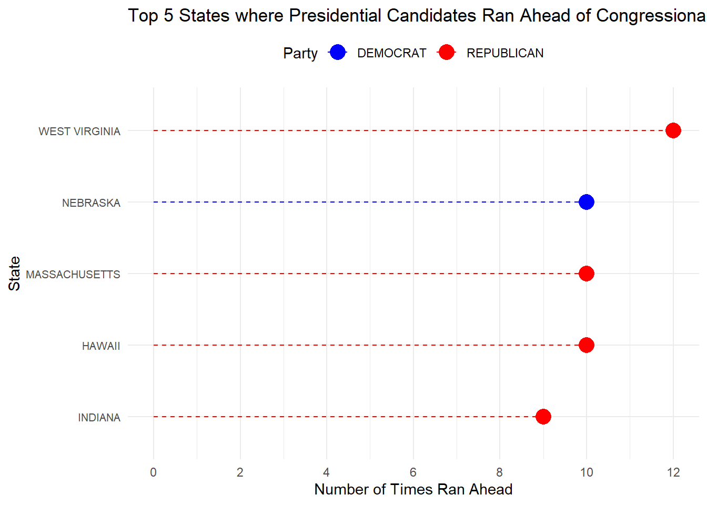
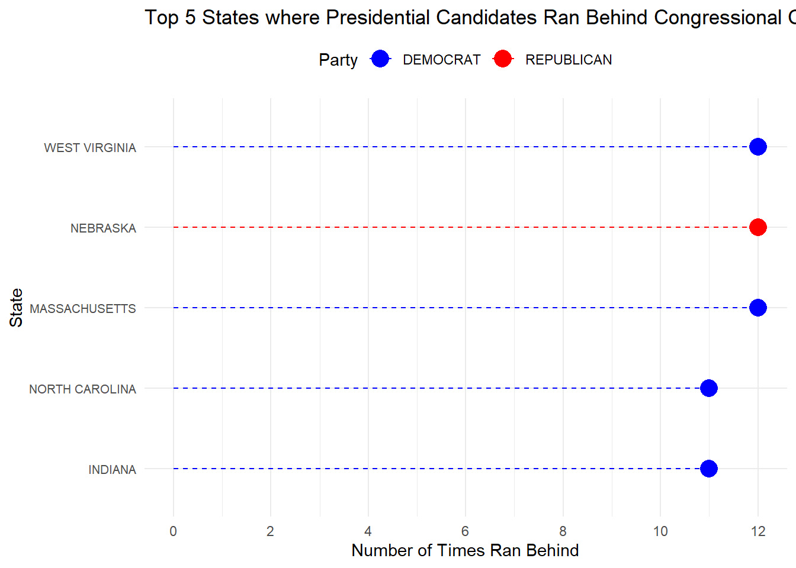
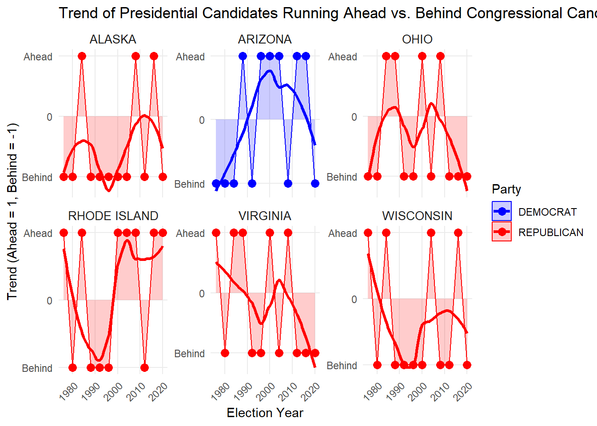
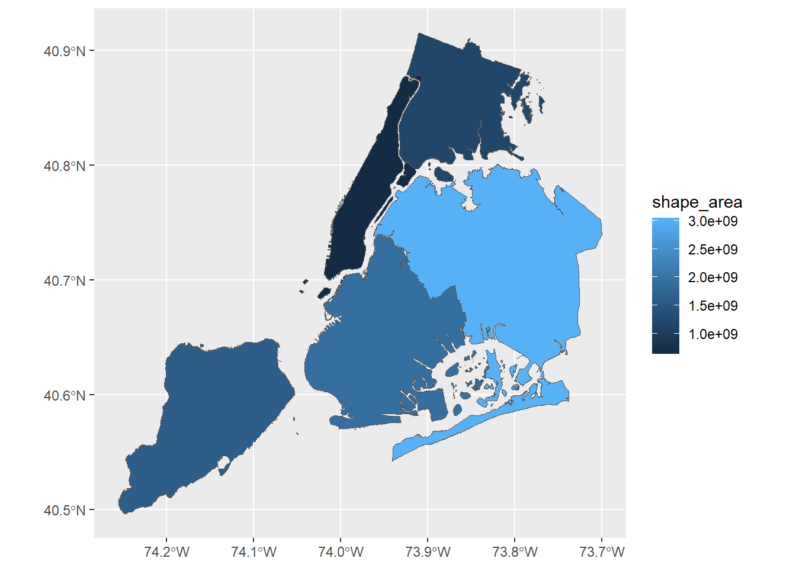
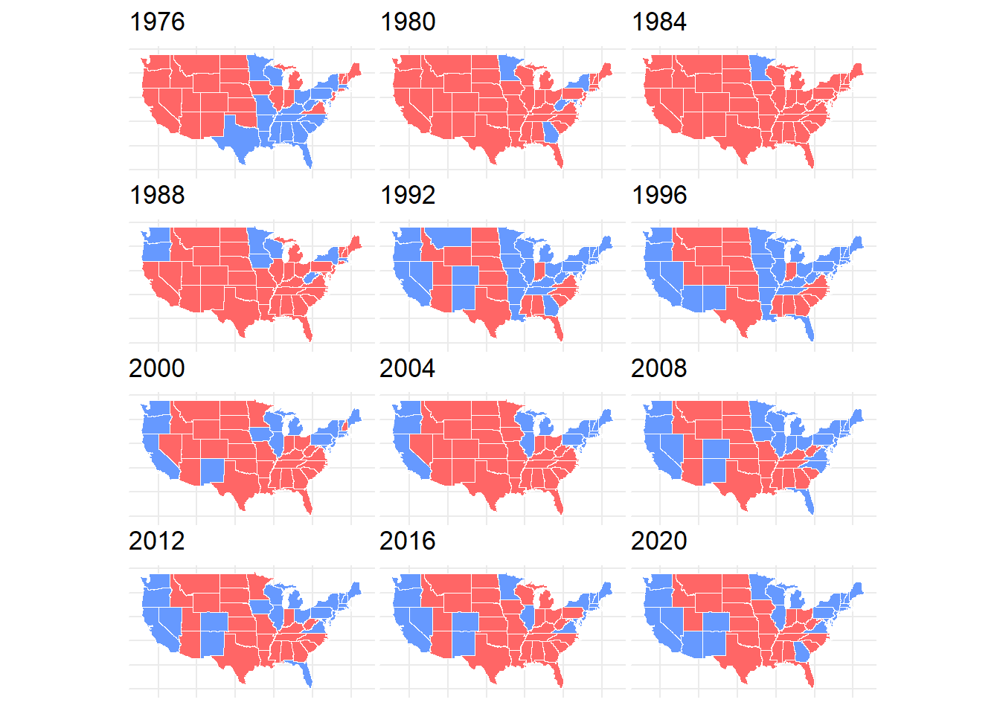
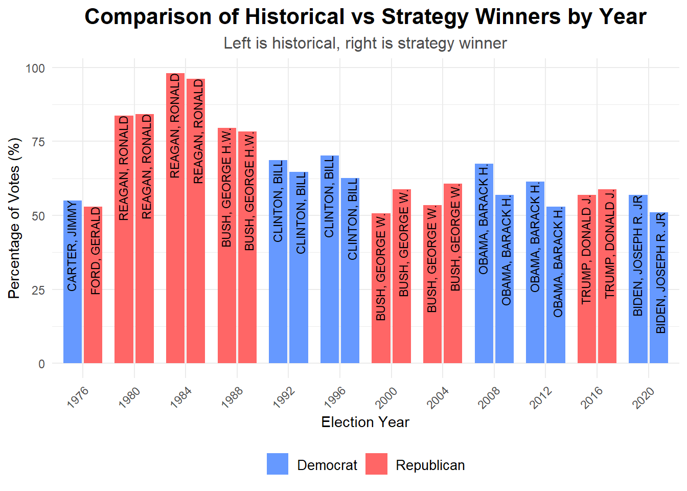
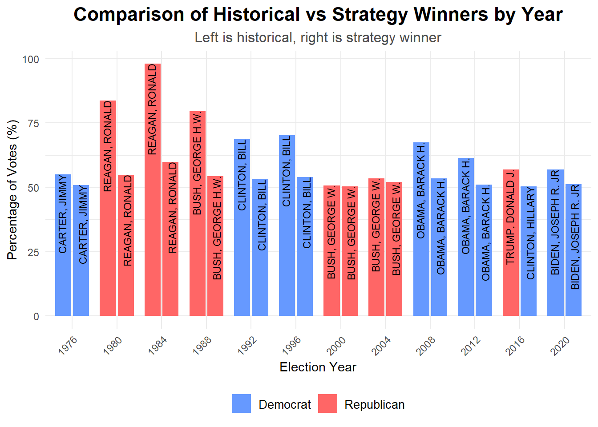
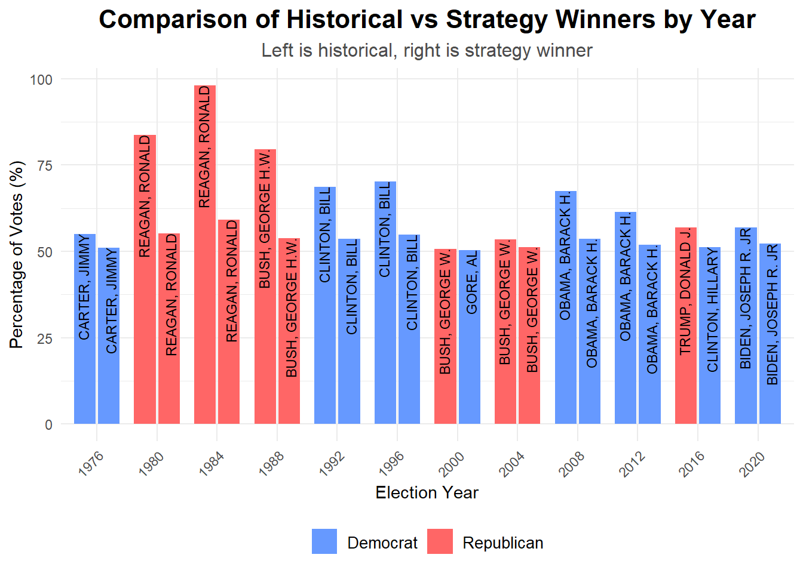

Mini-Project #03: Exploring the Effect of State-Level Electoral College Vote Allocation on Presidential Elections
Author
Ayrat Aymetov
Introduction to the Project: Evaluating Electoral College Fairness
This project focuses on the Electoral College (EC), a key part of the U.S. election process, and examines whether it represents voters fairly. Specifically, we analyze how changing the way Electoral College Votes (ECVs) are allocated could affect election outcomes. By comparing the historical “winner-take-all” method with other allocation strategies, the goal is to see how different rules might make results more representative of the popular vote.
The Electoral College system gives each state the freedom to decide how to allocate its ECVs. Most states use the “winner-take-all” method, which often faces criticism for being unfair. This project looks at four allocation strategies: 1. State-Wide Winner-Take-All (the historical method)
2. District-Wide Winner-Take-All + State-Wide “At Large” Votes
3. State-Wide Proportional Allocation
4. National Proportional Allocation
Using data from past U.S. presidential elections, we compare the winners under these methods, create visualizations, and evaluate if any of the strategies are “fairer” than the historical system.
The goal of this analysis is not to find one “right” answer but to better understand how different allocation methods impact election results. This project offers a chance to explore the balance between fairness, federalism, and the structure of the U.S. Constitution, allowing us to reflect on whether the Electoral College could evolve to better represent voters’ voices.
Before we begin, let’s load all the required libraries.
In Task 1, we focus on automating the process of downloading shapefiles for congressional districts from 1976 to 2012. These shapefiles, created by Jeffrey B. Lewis, Brandon DeVine, Lincoln Pritcher, and Kenneth C. Martis, are vital for analyzing the geographic boundaries of electoral districts over time. They generously make these files available here. The task involves defining the range of Congress numbers, constructing systematic file names and URLs, and ensuring that only necessary files are downloaded. This step is crucial for organizing and preparing the data efficiently.
Task 2 extends the project to include congressional shapefiles for elections from 2014 to 2022. These files are sourced from the US Census Bureau, which provides authoritative and highly detailed data on district boundaries. However, the data format differs slightly from the older congressional shapefiles. You can explore the US Census Bureau shapefiles online.
In this task, the process involves defining year ranges, constructing URLs for the FTP archive, and managing different file formats for recent years. For 2023 and 2024, state-specific files are downloaded, while a single national file is used for earlier years. The implementation also includes fallback mechanisms to ensure robust downloading and efficient organization of the data.
Task 3 involves analyzing vote count data provided by the MIT Election Data Science Lab to answer specific questions about historical trends in US elections. This includes identifying key patterns in seat allocation, vote distribution, and representation across states over time.
Question 1: Changes in US House Seats (1976–2022)
The first question evaluates which states experienced the most significant gains and losses in their number of seats in the US House of Representatives between 1976 and 2022. This analysis highlights the shifts in representation caused by population changes and reapportionment.
Code
# Loading datasets from csv filepresident_data <-read.csv("1976-2020-president.csv")house_data <-read.csv("1976-2022-house.csv")
Code
# Calculating seat changes and creating a table for top gains and losseslibrary(tidyverse)library(DT)top_changes <- house_data |>group_by(year, state) |>summarise(seats =n_distinct(district), .groups ="drop") |>filter(year %in%c(1976, 2022)) |>spread(year, seats) |>rename(seats_1976 =`1976`, seats_2022 =`2022`) |>mutate(seat_change = seats_2022 - seats_1976) |>arrange(desc(seat_change)) |>slice_head(n =3) |>bind_rows( house_data |>group_by(year, state) |>summarise(seats =n_distinct(district), .groups ="drop") |>filter(year %in%c(1976, 2022)) |>spread(year, seats) |>rename(seats_1976 =`1976`, seats_2022 =`2022`) |>mutate(seat_change = seats_2022 - seats_1976) |>arrange(seat_change) |>slice_head(n =3) )# Printing the top changes as a DT tabledatatable( top_changes,rownames =FALSE,options =list(dom ="t", paging =FALSE, info =FALSE, autoWidth =TRUE ))
As we see the top gainers are Texas, Florida and California. Top losers are New York, Ohio and Pennsylvania.
Question 2: Impact of Fusion Voting
New York’s fusion voting system allows candidates to appear on multiple party lines, combining votes across all lines. This question explores whether any election outcomes would have changed if the fusion system were not used, and candidates only received votes from their major party lines (Democrat or Republican). The analysis identifies elections where fusion voting determined the winner.
Code
# Analyzing the impact of fusion voting on election outcomeslibrary(tidyverse)library(DT)outcome_analysis <- house_data |>group_by(year, state, district, candidate) |>summarise(total_votes_fusion =sum(candidatevotes),major_party_votes =sum(candidatevotes[party %in%c("DEMOCRAT", "REPUBLICAN")]),fusion_used =any(fusion_ticket),party =first(party),.groups ="drop" ) |>group_by(year, state, district) |>mutate(winner_fusion = candidate[which.max(total_votes_fusion)],winner_no_fusion = candidate[which.max(major_party_votes)],party_fusion = party[which.max(total_votes_fusion)],party_no_fusion = party[which.max(major_party_votes)],pct_fusion_winner =round(total_votes_fusion[which.max(total_votes_fusion)] /sum(total_votes_fusion) *100, 1),pct_no_fusion_winner =round(major_party_votes[which.max(total_votes_fusion)] /sum(major_party_votes) *100, 1),pct_fusion_no_fusion =round(total_votes_fusion[which.max(major_party_votes)] /sum(total_votes_fusion) *100, 1),pct_no_fusion_no_fusion =round(major_party_votes[which.max(major_party_votes)] /sum(major_party_votes) *100, 1) ) |>filter(fusion_used ==TRUE& winner_fusion != winner_no_fusion) |>distinct( year, state, district, winner_fusion, party_fusion, pct_fusion_winner, pct_no_fusion_winner, winner_no_fusion, party_no_fusion, pct_fusion_no_fusion, pct_no_fusion_no_fusion ) |>rename(Year = year,State = state,District = district,"Winner Fusion"= winner_fusion,"Party"= party_fusion,"% Fusion"= pct_fusion_winner,"% No Fusion"= pct_no_fusion_winner,"Winner No Fusion"= winner_no_fusion,"Party_"= party_no_fusion,"%_Fusion"= pct_fusion_no_fusion,"%_No_Fusion"= pct_no_fusion_no_fusion )# Displaying the result as a DT tabledatatable( outcome_analysis,rownames =FALSE,options =list(dom ="t", # Remove search field and 'show entries'paging =FALSE, # Disable paginationinfo =FALSE, # Remove "Showing X to Y of Z entries"autoWidth =TRUE, # Enable auto column widthscrollX =TRUE# Add horizontal scroll bar ),class ="nowrap"# Prevent table wrapping, enabling better use of the scroll bar)
3.Investigating Presidential vs. Congressional Vote Performance
In this analysis, we examine whether presidential candidates receive more or fewer votes compared to congressional candidates of the same party within the same state. We explore whether this trend changes over time, varies across states, or differs between parties. Additionally, we analyze whether certain presidents are notably more or less popular than their co-partisans.
Code
# Summarizing total votes and percentages for presidential and congressional electionstotal_pres_votes <- president_data |>group_by(year, state) |>summarise(total_pres_votes =sum(candidatevotes), .groups ="drop")total_congress_votes <- house_data |>group_by(year, state) |>summarise(total_congress_votes =sum(candidatevotes), .groups ="drop")pres_percentage <- president_data |>filter(party_simplified %in%c("DEMOCRAT", "REPUBLICAN")) |>group_by(year, state, party_simplified) |>summarise(pres_votes =sum(candidatevotes), .groups ="drop") |>left_join(total_pres_votes, by =c("year", "state")) |>mutate(pres_percentage = (pres_votes / total_pres_votes) *100)congress_percentage <- house_data |>filter(party %in%c("DEMOCRAT", "REPUBLICAN")) |>group_by(year, state, party) |>summarise(congress_votes =sum(candidatevotes), .groups ="drop") |>left_join(total_congress_votes, by =c("year", "state")) |>mutate(congress_percentage = (congress_votes / total_congress_votes) *100)# Comparing percentages and determining ahead or behind statuscombined_percentages <- pres_percentage |>inner_join(congress_percentage, by =c("year", "state", "party_simplified"="party")) |>mutate(ahead =ifelse(pres_percentage > congress_percentage, 1, 0),behind =ifelse(pres_percentage < congress_percentage, 1, 0) )# Summarizing results by state and partysummary_table <- combined_percentages |>group_by(state, party_simplified) |>summarise(times_ahead =sum(ahead),times_behind =sum(behind),.groups ="drop" ) |>rename(Party = party_simplified, State = state)# Displaying the summary as an interactive DT tabledatatable(summary_table, options =list(pageLength =10, autoWidth =TRUE),caption ="Times Presidential Candidates Ran Ahead or Behind Congressional Candidates by State and Party")
The table shows the number of times candidates from the Democratic and Republican parties ran ahead or fell behind from 1976 to 2020.
Here are the top 5 states where presidential candidates ran ahead of congressional candidates and the top 5 states where they ran behind.
Code
# Selecting the top 5 states where presidential candidates ran ahead the most and creating the charttop_5_ahead <- summary_table |>arrange(desc(times_ahead)) |>head(5)ggplot(top_5_ahead, aes(x =reorder(State, times_ahead), y = times_ahead, color = Party)) +geom_segment(aes(x = State, xend = State, y =0, yend = times_ahead), linetype ="dashed") +geom_point(size =5) +coord_flip() +labs(title ="Top 5 States where Presidential Candidates Ran Ahead of Congressional Candidates",x ="State",y ="Number of Times Ran Ahead",color ="Party" ) +scale_y_continuous(breaks = scales::pretty_breaks(n =5)) +scale_color_manual(values =c("DEMOCRAT"="blue", "REPUBLICAN"="red")) +theme_minimal() +theme(axis.text.y =element_text(size =8), legend.position ="top")

Code
# Selecting the top 5 states where presidential candidates ran behind the most and creating the charttop_5_behind <- summary_table |>arrange(desc(times_behind)) |>head(5)ggplot(top_5_behind, aes(x =reorder(State, times_behind), y = times_behind, color = Party)) +geom_segment(aes(x = State, xend = State, y =0, yend = times_behind), linetype ="dashed") +geom_point(size =5) +coord_flip() +labs(title ="Top 5 States where Presidential Candidates Ran Behind Congressional Candidates",x ="State",y ="Number of Times Ran Behind",color ="Party" ) +scale_y_continuous(breaks = scales::pretty_breaks(n =5)) +scale_color_manual(values =c("DEMOCRAT"="blue", "REPUBLICAN"="red")) +theme_minimal() +theme(axis.text.y =element_text(size =8), legend.position ="top")

Next we aim to analyze how the trend of presidential candidates running ahead or behind congressional candidates varies over time. Let’s focus on states where the presidential candidate ran ahead or behind an equal or nearly equal number of times.
Code
# Assigning trend value for ahead (+1) and behind (-1)trend_over_time <- combined_percentages |>mutate(trend_value =ifelse(ahead > behind, 1, -1))# Identifying states with significant trend switches over timeswitching_states <- trend_over_time |>group_by(state, party_simplified) |>arrange(state, year) |>mutate(previous_trend =lag(trend_value)) |>filter(trend_value != previous_trend) |>ungroup() |>count(state, party_simplified) |>arrange(desc(n)) |>head(6) |>select(state, party_simplified)# Filtering trend data for the top switching statesplot_data <- trend_over_time |>semi_join(switching_states, by =c("state", "party_simplified"))# Plotting the trend of running ahead vs. behind over timeggplot(plot_data, aes(x = year, y = trend_value, group = state, color = party_simplified)) +geom_area(aes(fill = party_simplified), alpha =0.2, position ="identity") +geom_smooth(se =FALSE, method ="loess", size =1.2) +geom_point(size =3) +scale_y_continuous(breaks =c(-1, 0, 1), labels =c("Behind", "0", "Ahead")) +facet_wrap(~ state, scales ="free_y") +labs(title ="Trend of Presidential Candidates Running Ahead vs. Behind Congressional Candidates Over Time",x ="Election Year",y ="Trend (Ahead = 1, Behind = -1)",color ="Party",fill ="Party" ) +scale_color_manual(values =c("DEMOCRAT"="blue", "REPUBLICAN"="red")) +scale_fill_manual(values =c("DEMOCRAT"="blue", "REPUBLICAN"="red")) +theme_minimal() +theme(strip.text =element_text(size =10),axis.text.x =element_text(angle =45, hjust =1),panel.grid.minor =element_blank() )

From the plots, we observe that in Alaska, Republican presidential candidates consistently ran behind their congressional counterparts. In Arizona, starting from the late 1980s, Democratic candidates began running ahead of their congressional candidates.
In the next research we aim to identify whether specific presidents were significantly more or less popular than their co-partisans in congressional elections. By comparing the percentage of votes received by presidential candidates to the average percentage received by their party’s congressional candidates, we can determine which presidents outperformed or underperformed their party’s baseline.
The table shows that, for example, in the DISTRICT OF COLUMBIA, BIDEN, JOSEPH R. JR significantly outperformed the Democratic congressional candidate.
Task 4: Automate Zip File Extraction.
Next, we will create a function, read_shp_from_zip(), that automates the process of extracting .shp files from zip archives and reading them into R using read_sf(). This function will streamline the handling of shapefiles for analysis.
Code
# Defining a function to extract and read a shapefile from a zip archiveread_shp_from_zip <-function(zip_file) { zip_contents <-unzip(zip_file, list =TRUE) required_files <- zip_contents$Name[grepl("\\.(shp|shx|dbf|prj)$", zip_contents$Name)]if (length(required_files) ==0) {stop("No required shapefile components found in the zip contents. Please check the zip file.") } temp_dir <-tempdir() extracted_files <-unzip(zip_file, files = required_files, exdir = temp_dir, overwrite =TRUE) shp_file_path <- extracted_files[grepl("\\.shp$", extracted_files)]if (!file.exists(shp_file_path)) {stop("Failed to extract the .shp file. Please check the zip file.") } sf_data <-read_sf(shp_file_path)return(sf_data)}# Downloading and visualizing NYC borough boundariesif(!file.exists("nyc_borough_boundaries.zip")){download.file("https://data.cityofnewyork.us/api/geospatial/tqmj-j8zm?method=export&format=Shapefile", destfile ="nyc_borough_boundaries.zip", mode ="wb")}nyc_sf <-read_shp_from_zip("nyc_borough_boundaries.zip")ggplot(nyc_sf, aes(geometry = geometry, fill = shape_area)) +geom_sf()

Here we tested out read_shp_from_zip() function on the sample nyc_borough_boundaries.zip file.
Task 5. Chloropleth Visualization of the 2000 Presidential Election Electoral College Results.
In this task, we will create a choropleth map to visualize the electoral college results of the 2000 presidential election between Bush and Gore. Each state will be colored based on the party that won the most votes in that state, providing a clear and intuitive way to understand the distribution of electoral support across the country.
Code
# Extracting shapefile from "districts106.zip"us_map <-read_shp_from_zip("districts106.zip")
Code
# Summarizing election data and congressmen for 2000unique_districts_2000 <- house_data |>filter(year ==2000) |>group_by(state) |>summarise(congressmen =n_distinct(district) +2)election_2000 <- president_data |>filter(year ==2000& candidate %in%c("BUSH, GEORGE W.", "GORE, AL")) |>select(state, candidate, party_simplified, candidatevotes)election_2000_summary <- election_2000 |>group_by(state) |>summarise(winner = candidate[which.max(candidatevotes)],party = party_simplified[which.max(candidatevotes)] ) |>left_join(unique_districts_2000, by ="state")
Task 6: Creating an Advanced Choropleth Visualization of Electoral College Results
In this task, we will enhance the choropleth visualization by adding an animated or faceted view to display election results over time. This will allow us to explore how electoral outcomes have evolved across different years. Using techniques like facet_wrap or facet_grid, we will ensure the visualization is easy to read and provides insights into trends and patterns over multiple election cycles.
Code
# Summarizing president_data to get the winning party in each state by yearelection_summary <- president_data |>filter(party_detailed %in%c("DEMOCRAT", "REPUBLICAN")) |>group_by(state, year) |>summarise(winner = party_detailed[which.max(candidatevotes)], .groups ="drop" )# Converting state names in election_summary to title case to match us_mapelection_summary <- election_summary |>mutate(state =str_to_title(state))# Renaming STATENAME to state in us_map for consistencyus_map <- us_map |>rename(state = STATENAME)# Creating the mainland USA map without Alaska and Hawaiius_mainland <- us_map |>filter(!state %in%c("Alaska", "Hawaii")) |>mutate(geometry = sf::st_make_valid(geometry)) |>group_by(state) |>summarise(geometry = sf::st_union(geometry), .groups ="drop") |>left_join(election_summary, by ="state")# Generating individual plots for each yearyearly_plots <-unique(us_mainland$year) |>map(function(y) {ggplot(us_mainland |>filter(year == y)) +geom_sf(aes(fill = winner), color ="white") +scale_fill_manual(values =c("DEMOCRAT"="#6699FF", "REPUBLICAN"="#FF6666")) +theme_minimal() +theme(legend.position ="none",axis.title =element_blank(),axis.text =element_blank(),axis.ticks =element_blank(),plot.margin =margin(0.1, 0.1, 0.1, 0.1) ) +labs(title =as.character(y)) })# Combining all plots into a grid with a single main titlefinal_plot <-wrap_plots(yearly_plots, ncol =3) +plot_layout(guides ="collect") &plot_annotation(title ="Presidential Election Results") +theme(plot.title =element_text(size =20, hjust =0.5),legend.position ="bottom",legend.title =element_blank() )final_plot

Exploring the Effects of Electoral College Allocation Rules. Comparing the Effects of ECV Allocation Rules
In this task, we will analyze how different Electoral College Vote (ECV) allocation strategies impact presidential election outcomes. Specifically, we will:
Compare the historical winner under the State-Wide Winner-Take-All system with the results under alternative allocation strategies:
Examine patterns and consistency between the strategies to determine whether specific methods systematically favor one political party over the other.
This analysis will also include assumptions for the district-level winner-take-all strategy, where a presidential candidate is assumed to win in districts represented by congressional members of their party. Finally, we will compare the results to identify any notable differences and trends across the methods.
We will compare the State-Wide Winner-Take-All (the historical strategy) with other three strategies.
# Calculating Electoral Votes per State. Will be used in further code chunkselectoral_votes <- house_data |>group_by(year, state) |>summarise(electoral_votes =n_distinct(district) +2,.groups ="drop" )
This is the data for a State-Wide Winner-Take-All strategy:
Code
# This code determines the historical winners# Filtering major parties and determining state-level winnersstate_winners <- president_data |>filter(party_simplified %in%c("DEMOCRAT", "REPUBLICAN")) |>group_by(year, state, candidate, party_simplified) |>summarise(candidate_votes =sum(candidatevotes), # Total votes for the candidate in the state.groups ="drop" ) |>group_by(year, state) |>filter(candidate_votes ==max(candidate_votes)) |># Candidate with most votes in the stateungroup() |>left_join(electoral_votes, by =c("year", "state")) # Joining with electoral votes data# Calculating national-level winners with correct percentage calculationhistorical_winner_summary <- state_winners |>group_by(year, candidate, party_simplified) |>summarise(total_ecvs =sum(electoral_votes, na.rm =TRUE), # Total ECVs won by the candidate.groups ="drop" ) |>group_by(year) |>mutate(total_ecvs_all_candidates =sum(total_ecvs, na.rm =TRUE), # Total ECVs across all candidatespercentage = (total_ecvs / total_ecvs_all_candidates) *100# Correct percentage calculation ) |>filter(total_ecvs ==max(total_ecvs, na.rm =TRUE)) |># Candidate with the most ECVssummarise(`Historical Winner`= candidate,Party =recode(party_simplified, "DEMOCRAT"="DEM", "REPUBLICAN"="REP"),`%`=round(percentage, 1),.groups ="drop" )
Calculating and comparing State-Wide Winner-Take-All strategy with District-Wide Winner-Take-All + State-Wide “At Large” Votes strategy:
Code
# Aggregating the state-wide winner for the two 'at-large' votesstate_wide_winner <- president_data |>filter(!is.na(candidatevotes), !is.na(totalvotes)) |>group_by(year, state) |>summarise(state_winner = candidate[which.max(candidatevotes)], # Determining state-wide winnerstate_party = party_simplified[which.max(candidatevotes)], # Determining state-wide winning party.groups ="drop" )# Joining state-wide winners with historical data and simplifying assumptionsdistrict_level_allocation <- state_wide_winner |>left_join(historical_winner_summary, by ="year") |>mutate(calculated_winner = state_winner, calculated_party = state_party )# Summarizing the calculated winner based on the district + state "at-large" strategycalculated_winner_summary <- district_level_allocation |>group_by(year, calculated_winner, calculated_party) |>summarise(calculated_ecvs =n(), # Calculating total ECVs.groups ="drop" ) |>group_by(year) |>mutate(percentage = (calculated_ecvs /sum(calculated_ecvs)) *100) |>filter(calculated_ecvs ==max(calculated_ecvs)) |>summarise(`Strategy Winner`= calculated_winner,`Party_`=recode(calculated_party, "DEMOCRAT"="DEM", "REPUBLICAN"="REP"),`%_`=round(percentage, 1),.groups ="drop" )# Combining the historical and calculated summaries for comparisoncomparison <- historical_winner_summary |>left_join(calculated_winner_summary, by ="year")# Converting column names to uppercasecolnames(comparison) <-toupper(colnames(comparison))# Creating a DT table for visualizationdatatable( comparison,rownames =FALSE,options =list(dom ="t", # Remove search field and 'show entries'paging =FALSE, # Disable paginationinfo =FALSE, # Remove "Showing X to Y of Z entries"autoWidth =TRUE# Enable automatic column width ))
In the table, we observe the results for both the historical presidential winner and the “District-Wide Winner-Take-All + State-Wide ‘At Large’ Votes” strategy winner.
Code
# Preparing data for visualizationcomparison_plot_data <- comparison |>mutate(Winner_Type ="Historical Winner",Percentage =`%`,Party = PARTY,Candidate =`HISTORICAL WINNER` ) |>bind_rows( comparison |>mutate(Winner_Type ="Strategy Winner",Percentage =`%_`,Party = PARTY_,Candidate =`STRATEGY WINNER` ) ) |>mutate(Position =if_else(Winner_Type =="Historical Winner", "Left", "Right"))# Defining custom colors for partieswinner_colors <-c("DEM"="#6699FF", "REP"="#FF6666")# Creating the plotpcomparison_plot <-ggplot(comparison_plot_data, aes(x =factor(YEAR), y = Percentage, fill = Party)) +geom_col(aes(group = Position), position =position_dodge2(width =0.9, preserve ="single"), width =0.8) +geom_text(aes(label = Candidate,group = Position ),position =position_dodge2(width =0.9, preserve ="single"),hjust =1, angle =90, size =3,color ="black" ) +scale_fill_manual(values = winner_colors,labels =c("Democrat", "Republican") ) +theme_minimal() +labs(title ="Comparison of Historical vs Strategy Winners by Year",subtitle ="Left is historical, right is strategy winner", # Subtitle placed under the titlex ="Election Year",y ="Percentage of Votes (%)",fill ="Legend" ) +theme(plot.title =element_text(size =16, face ="bold", hjust =0.5),plot.subtitle =element_text(size =12, hjust =0.5, color ="gray30"),axis.text.x =element_text(angle =45, hjust =1),legend.position ="bottom",legend.title =element_blank(),legend.text =element_text(size =10) )pcomparison_plot

Stratery State-Wide Proportional
Code
# Calculating State-Wide Proportional Allocationstatewide_proportional <- president_data |>filter(party_simplified %in%c("DEMOCRAT", "REPUBLICAN")) |>group_by(year, state, candidate, party_simplified) |>summarise(candidate_votes =sum(candidatevotes), # Total votes for the candidate in the statestate_total_votes =unique(totalvotes), # Total votes in the state.groups ="drop" ) |>mutate(vote_proportion = candidate_votes / state_total_votes # Proportion of votes for the candidate ) |>left_join( electoral_votes, # Joining with electoral votes tableby =c("year", "state") ) |>mutate(allocated_ecvs =round(vote_proportion * electoral_votes) # Allocating ECVs proportionally )# Aggregating Proportional ECVs at the National Levelstrategy_winner_summary <- statewide_proportional |>group_by(year, candidate, party_simplified) |>summarise(total_ecvs =sum(allocated_ecvs, na.rm =TRUE), # Summing allocated ECVs.groups ="drop" ) |>group_by(year) |>mutate(percentage = (total_ecvs /sum(total_ecvs, na.rm =TRUE)) *100) |>filter(total_ecvs ==max(total_ecvs, na.rm =TRUE)) |>summarise(`Strategy Winner`= candidate,`Party_`=recode(party_simplified, "DEMOCRAT"="DEM", "REPUBLICAN"="REP"),`%_`=round(percentage, 1),.groups ="drop" )# Aligning Years for Joininghistorical_winner_summary <- historical_winner_summary |>mutate(year =as.integer(year))strategy_winner_summary <- strategy_winner_summary |>mutate(year =as.integer(year))# Combining Historical and Strategy Resultscomparison <- historical_winner_summary |>left_join(strategy_winner_summary, by ="year")# Creating a DT Tabledatatable( comparison,rownames =FALSE,options =list(dom ="t", # Removing search field and 'show entries'paging =FALSE, # Disabling paginationinfo =FALSE, # Removing "Showing X to Y of Z entries"autoWidth =TRUE# Enabling auto column width ))
Code
# Preparing data for visualizationcomparison_plot_data <- comparison |>mutate(Winner_Type ="Historical Winner",Percentage =`%`,Party = Party,Candidate =`Historical Winner` ) |>bind_rows( comparison |>mutate(Winner_Type ="Strategy Winner",Percentage =`%_`,Party = Party_,Candidate =`Strategy Winner` ) ) |>mutate(Position =if_else(Winner_Type =="Historical Winner", "Left", "Right"))# Defining custom colors for partieswinner_colors <-c("DEM"="#6699FF", "REP"="#FF6666")# Creating the plot for comparing historical and strategy winnerscomparison_plot <-ggplot(comparison_plot_data, aes(x =factor(year), y = Percentage, fill = Party)) +geom_col(aes(group = Position), position =position_dodge2(width =0.9, preserve ="single"), width =0.8 ) +geom_text(aes(label = Candidate,group = Position ),position =position_dodge2(width =0.9, preserve ="single"),hjust =1, # Align text from the right sideangle =90, # Rotate text verticallysize =3,color ="black" ) +scale_fill_manual(values = winner_colors,labels =c("Democrat", "Republican") ) +theme_minimal() +labs(title ="Comparison of Historical vs Strategy Winners by Year",subtitle ="Left is historical, right is strategy winner",x ="Election Year",y ="Percentage of Votes (%)",fill ="Legend" ) +theme(plot.title =element_text(size =16, face ="bold", hjust =0.5),plot.subtitle =element_text(size =12, hjust =0.5, color ="gray30"),axis.text.x =element_text(angle =45, hjust =1),legend.position ="bottom",legend.title =element_blank(),legend.text =element_text(size =10) )comparison_plot

Stratery National Proportional
Code
# Calculating National Proportional Allocation of Electoral College Votesnational_proportional <- president_data |>filter(party_simplified %in%c("DEMOCRAT", "REPUBLICAN")) |># Filtering for major partiesgroup_by(year, candidate, party_simplified) |>summarise(candidate_votes =sum(candidatevotes), # Summing candidate votes nationallynational_total_votes =sum(totalvotes, na.rm =TRUE), # Total votes nationally.groups ="drop" ) |>mutate(vote_proportion = candidate_votes / national_total_votes # Calculating vote proportion ) |>left_join( electoral_votes |>group_by(year) |>summarise(total_ecvs =sum(electoral_votes), .groups ="drop"), # Summing total electoral votes per yearby ="year" ) |>mutate(allocated_ecvs =round(vote_proportion * total_ecvs) # Allocating ECVs proportionally )# Aggregating National Proportional ECVs at the National Levelstrategy_winner_summary <- national_proportional |>group_by(year, candidate, party_simplified) |>summarise(total_ecvs =sum(allocated_ecvs, na.rm =TRUE), # Summing allocated ECVs.groups ="drop" ) |>group_by(year) |>mutate(percentage = (total_ecvs /sum(total_ecvs, na.rm =TRUE)) *100) |>filter(total_ecvs ==max(total_ecvs, na.rm =TRUE)) |># Identifying the winner with the most ECVssummarise(`Strategy Winner`= candidate,`Party_`=recode(party_simplified, "DEMOCRAT"="DEM", "REPUBLICAN"="REP"),`%_`=round(percentage, 1),.groups ="drop" )# Ensuring Alignment for Joininghistorical_winner_summary <- historical_winner_summary |>mutate(year =as.integer(year))strategy_winner_summary <- strategy_winner_summary |>mutate(year =as.integer(year))# Combining Historical and Strategy Resultscomparison <- historical_winner_summary |>left_join(strategy_winner_summary, by ="year")# Creating a DT Table to Compare Resultsdatatable( comparison,rownames =FALSE,options =list(dom ="t", # Removing search field and 'show entries'paging =FALSE, # Disabling paginationinfo =FALSE, # Removing "Showing X to Y entries"autoWidth =TRUE# Enabling auto column width ))
Code
# Preparing data for visualizationcomparison_plot_data <- comparison |>mutate(Winner_Type ="Historical Winner",Percentage =`%`,Party = Party,Candidate =`Historical Winner` ) |>bind_rows( comparison |>mutate(Winner_Type ="Strategy Winner",Percentage =`%_`,Party = Party_,Candidate =`Strategy Winner` ) ) |>mutate(Position =if_else(Winner_Type =="Historical Winner", "Left", "Right"))# Defining custom colors for partieswinner_colors <-c("DEM"="#6699FF", "REP"="#FF6666")# Creating the plotcomparison_plot <-ggplot(comparison_plot_data, aes(x =factor(year), y = Percentage, fill = Party)) +geom_col(aes(group = Position),position =position_dodge2(width =0.9, preserve ="single"),width =0.8 ) +geom_text(aes(label = Candidate,group = Position ),position =position_dodge2(width =0.9, preserve ="single"),hjust =1,angle =90,size =3,color ="black" ) +scale_fill_manual(values = winner_colors,labels =c("Democrat", "Republican") ) +theme_minimal() +labs(title ="Comparison of Historical vs Strategy Winners by Year",subtitle ="Left is historical, right is strategy winner",x ="Election Year",y ="Percentage of Votes (%)",fill ="Legend" ) +theme(plot.title =element_text(size =16, face ="bold", hjust =0.5),plot.subtitle =element_text(size =12, hjust =0.5, color ="gray30"),axis.text.x =element_text(angle =45, hjust =1),legend.position ="bottom",legend.title =element_blank(),legend.text =element_text(size =10) )# Displaying the plotcomparison_plot

Task 7: Evaluating Fairness of ECV Allocation Schemes.
Fact check evaluation the fairness of the different ECV electoral allocation schemes.
The way Electoral College Votes (ECVs) are distributed plays a big role in deciding who becomes president. Let’s look at how four systems—State-Wide Winner-Take-All, District-Wide Winner-Take-All + State-Wide “At Large” Votes, State-Wide Proportional, and National Proportional—compare in terms of fairness.
How it works: The candidate with the most votes in a state wins all its ECVs.
Impact: Swing states have a big influence, while voters in states where their party is a minority don’t have much of a say. For example, in 2000, George W. Bush won the election even though Al Gore got more votes nationally.
Fairness: This system isn’t very fair because it ignores voters who don’t support the winning candidate in a state.
How it works: ECVs are given to the winner of each congressional district, with two extra ECVs going to the state-wide winner.
Impact: This system focuses more on local results, but it still gives more power to rural districts, which have fewer voters per representative. In 2008, Barack Obama’s ECV percentage dropped under this system compared to the historical method because of conservative-leaning districts.
Fairness: It’s better than the historical system because it includes local results, but it still doesn’t fully reflect voter preferences.
3. State-Wide Proportional
How it works: ECVs are divided based on the percentage of votes each candidate gets in a state.
Impact: This system gives voters in the minority party in each state more representation. For example, in 2016, Hillary Clinton would have won the presidency under this system, even though she lost with the historical method.
Fairness: It’s much fairer than winner-take-all because it reflects voter preferences within each state.
4. National Proportional
How it works: ECVs are distributed based on the percentage of votes each candidate gets nationally.
Impact: This system closely matches the national popular vote. In 2000, Al Gore, who lost under the historical system, would have won with this method.
Fairness: This is the fairest system because it ensures every voter’s voice counts equally, no matter where they live.
Conclusion
The National Proportional system is the most fair because it reflects the national popular vote. The State-Wide Proportional system also improves fairness by representing minority voters in each state. The District-Wide Winner-Take-All system is a step in the right direction but still doesn’t solve the problem of unequal representation. The State-Wide Winner-Take-All system is the least fair because it gives too much power to swing states and ignores many voters.
Recommendation: A proportional system—state-wide or national—would make elections more fair and better represent what voters want.